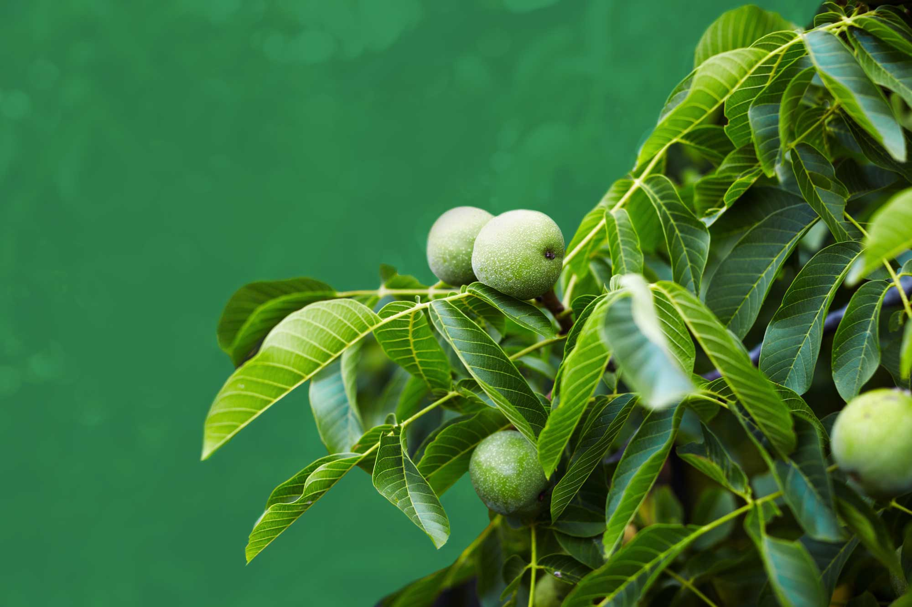

Elicir & la Bio-stimulation
Elicir est une société qui développe des produits de biocontrôle. Cette solution biosourcée a démontré 2 effets uniques : elle stimule la croissance des plantes et place les plantes en situation de résistance à des maladies liées à des champignons, des bactéries ou des virus. Christophe Bonazzi, gérant d'Elicir nous présente la société.
De quels constats est parti Elicir ?
L'origine d'Elicir est une découverte scientifique, réalisée par Mme Christelle Barbreau, docteur en phytopathologie. La recherche portait notamment sur le dialogue plante/pathogène et sur les mécanismes induits par des molécules signal dans la physiologie végétale.
Par ailleurs le constat plus écolo-économique est que la science - celle-ci en particulier - doit pouvoir offrir à l'agriculture des solutions "tirées de la nature" par opposition au pesticides qui comme leur nom l'indique sont des molécules de synthèses qui sont définies comme "mortelles" ('cides') pour des "être nuisibles" ('pestes'). Nous pensons donc que le biocontrôle est un nouveau paradigme scientifique dans le domaine de la santé des plantes et des cultures.

Qu'est-ce qu'une molécule signal ?
Une molécule de signal (de signalisation cellulaire) est une molécule extracellulaire, de nature biochimique variée, qui donne une information à une cellule de type récepteur intracellulaire. Ces molécules agissent par transduction à des cellules et déclenchent une cascade de réponses. Elles agissent comme médiateur chimique à plus ou moins longue distance pour la communication et signalisation cellulaire.
Quels problèmes Elicir essaye de résoudre ? Et qui est confronté à ces problèmes ?
Elicir développe une technologie qui, sur la base d'un extrait végétal 100% naturel et non toxique, réalise la bio-stimulation de la croissance et la bio-stimulation de la résistance de plantes aux pathogènes comme les champignons, les bactéries ou les virus. Pour diverses raisons de crise environnementales, ou d'impasse technologique dans le cas de certains pathogènes, la technologie a de multiples applications.
En matière de sylviculture, nous rencontrons des forestiers qui ont des difficultés croissantes dans la phase de reprise, et nous savons aussi que les coûts des engrais, notamment pour les pépiniéristes, pèsent de plus en plus. Dans les deux cas qui ne sont que des exemples, la bio-stimulation de la croissance est particulièrement intéressante.
J'imagine que vous n'allez pas nous donner la recette mais peut-on en savoir plus ?
C'est un extrait issu d'une plante européenne comestible.
Ces problèmes ne sont-ils pas, dans un premier temps, liés à des pratiques culturales à bout de souffle ? Aviez-vous identifié d'autres pistes ou solutions que la bio-stimulation ?
Les forestiers eux-mêmes constatent des difficultés croissantes. Ces difficultés correspondent plus probablement aux conséquences du changement climatique. Éventuellement on peut penser, mais cela nous ne l'avons pas du tout analysé ou démontré, que la nature d'avant ce changement était plus "tolérante" à des choix d'espèces ou à des pratiques culturales plus éloignées du développement spontané local des couverts végétaux.
Pour en savoir plus, rendez-vous sur elicir.com